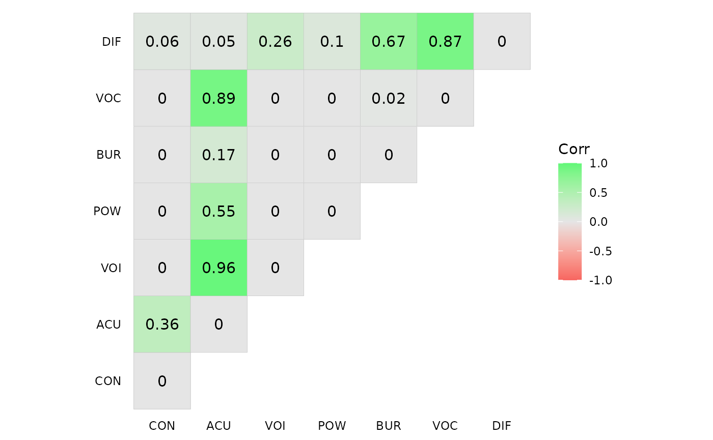

At the lowest level of the TRACE model’s architecture lie the acoustic features associated with the phonemes that compose words in the lexicon. jTRACE considers seven feature dimensions (see ?phonemes): power (pow), vocalic (vow), diffusiveness (dif), acuteness (acu), consonantal (con), voicing (voi), and burst (bur). These are the original dimensions used by McClelland and Elman (1986) in their original implementation of TRACE. Prior to the simulation, the model is introduced to a set of familiar phonemes, mimicking its familiarity with a language. Each of these phonemes are coded by assigning them a 1-9 score in each of the feature dimensions. McClelland and Elman’s original phoneme set was later extended by Mayor and Plunkett (2014).
library(jtracer)
data("phonemes")
Encoding(phonemes[["ipa"]]) <- "Latin-1"
Encoding(phonemes[["trace"]]) <- "Latin-1"
head(phonemes)
#> # A tibble: 6 × 15
#> id ipa trace description is_english is_spanish is_catalan type pow
#> <dbl> <chr> <chr> <chr> <lgl> <lgl> <lgl> <chr> <dbl>
#> 1 9 ɹ r voiced alveola… TRUE FALSE FALSE Cons… 7
#> 2 23 x x voiceless vela… FALSE TRUE FALSE Cons… 6
#> 3 5 k k voiceless vela… TRUE TRUE TRUE Cons… 4
#> 4 6 g g voiced velar s… TRUE TRUE TRUE Cons… 4
#> 5 33 ʁ R voiced uvular … FALSE FALSE TRUE Cons… 6
#> 6 28 β B voiced bilabia… FALSE TRUE TRUE Cons… 6
#> # … with 6 more variables: voc <dbl>, dif <dbl>, acu <dbl>, con <dbl>,
#> # voi <dbl>, bur <dbl>Both versions were explicitly designed to fit the English phonology. We have coded new phonemes, not restricted to the English phonology, in the phonemes data frame included in this package. This way, it is possible to run simlation on a model that is familiar to phonologies different than the English one, such as Spanish and Catalan. The dataframe includes three logical variables indicating whether a given phoneme is present in English (is_english), Spanish (is_spanish), or Catalan (is_catalan), respectively.
| IPA symbol | jTRACE symbol | Acoustic features | ||||||||
|---|---|---|---|---|---|---|---|---|---|---|
| POW | VOC | DIF | ACU | CON | VOI | BUR | ||||
| Consonant | ||||||||||
| 9 | ɹ | r | voiced alveolar approximant | 7 | 7 | 1 | 2 | 3 | 8 | 0 |
| 5 | k | k | voiceless velar stop | 4 | 1 | 2 | 3 | 8 | 1 | 4 |
| 6 | g | g | voiced velar stop | 4 | 1 | 2 | 3 | 8 | 7 | 3 |
| 22 | ŋ | N | voiced velar nasal | 7 | 6 | 2 | 3 | 4 | 8 | 0 |
| 10 | l | l | voiced alveolar lateral approximant | 7 | 7 | 2 | 4 | 3 | 9 | 0 |
| 21 | h | h | voiceless glottal fricative | 6 | 4 | 4 | 1 | 5 | 1 | 0 |
| 8 | ʃ | S | voiceless post-alveolar fricative | 6 | 4 | 6 | 4 | 5 | 1 | 0 |
| 19 | ʒ | M | voiced post-alveolar fricative | 6 | 4 | 6 | 4 | 5 | 8 | 0 |
| 1 | p | p | voiceless bilabial stop | 4 | 1 | 7 | 2 | 8 | 1 | 8 |
| 2 | b | b | voiced bilabial stop | 4 | 1 | 7 | 2 | 8 | 7 | 7 |
| 3 | t | t | voiceless alveolar stop | 4 | 1 | 7 | 7 | 8 | 1 | 6 |
| 12 | f | f | voiceless labiodental fricative | 6 | 4 | 7 | 3 | 5 | 1 | 0 |
| 18 | v | v | voiced labiodental fricative | 6 | 4 | 7 | 3 | 5 | 8 | 0 |
| 13 | θ | T | voiceless dental fricative | 6 | 4 | 7 | 4 | 5 | 1 | 0 |
| 16 | ð | Z | voiced dental fricative | 6 | 4 | 7 | 4 | 5 | 8 | 0 |
| 17 | z | z | voiced alveolar fricative | 6 | 4 | 7 | 8 | 5 | 8 | 0 |
| 15 | m | m | voiced bilabial nasal | 7 | 6 | 7 | 2 | 4 | 8 | 0 |
| 14 | n | n | voiced alveolar nasal | 7 | 6 | 7 | 7 | 4 | 8 | 0 |
| 11 | w | w | voiced labialised (velar) approximant | 7 | 7 | 7 | 2 | 2 | 8 | 0 |
| 20 | j | j | voiced palatal approximant | 7 | 7 | 8 | 8 | 2 | 8 | 0 |
| 62 | dz | d | voiced alveolar affricate | 6 | 7 | 3 | 8 | 6 | 7 | 8 |
| 63 | tʃ | T | voiceless alveolar affricate | 6 | 7 | 3 | 8 | 6 | 7 | 1 |
| IPA symbol | jTRACE symbol | Acoustic features | ||||||||
|---|---|---|---|---|---|---|---|---|---|---|
| POW | VOC | DIF | ACU | CON | VOI | BUR | ||||
| Consonant | ||||||||||
| 23 | x | x | voiceless velar fricative | 6 | 4 | 3 | 1 | 5 | 1 | 0 |
| 5 | k | k | voiceless velar stop | 4 | 1 | 2 | 3 | 8 | 1 | 4 |
| 6 | g | g | voiced velar stop | 4 | 1 | 2 | 3 | 8 | 7 | 3 |
| 28 | β | B | voiced bilabial fricative | 6 | 4 | 7 | 2 | 5 | 8 | 0 |
| 10 | l | l | voiced alveolar lateral approximant | 7 | 7 | 2 | 4 | 3 | 9 | 0 |
| 8 | ʃ | S | voiceless post-alveolar fricative | 6 | 4 | 6 | 4 | 5 | 1 | 0 |
| 1 | p | p | voiceless bilabial stop | 4 | 1 | 7 | 2 | 8 | 1 | 8 |
| 2 | b | b | voiced bilabial stop | 4 | 1 | 7 | 2 | 8 | 7 | 7 |
| 3 | t | t | voiceless alveolar stop | 4 | 1 | 7 | 7 | 8 | 1 | 6 |
| 27 | ɲ | 6 | voiced palatal nasal | 7 | 6 | 3 | 3 | 4 | 8 | 0 |
| 25 | ɾ | 4 | voiced alveolar tap | 7 | 7 | 1 | 3 | 3 | 8 | 0 |
| 30 | ʝ | J | voiced palatal fricative | 6 | 4 | 5 | 4 | 5 | 8 | 0 |
| 4 | d | d | voiced alveolar stop | 4 | 1 | 7 | 7 | 8 | 7 | 5 |
| 12 | f | f | voiceless labiodental fricative | 6 | 4 | 7 | 3 | 5 | 1 | 0 |
| 13 | θ | T | voiceless dental fricative | 6 | 4 | 7 | 4 | 5 | 1 | 0 |
| 26 | r | 5 | voiced alveolar trill | 7 | 7 | 1 | 4 | 3 | 8 | 0 |
| 16 | ð | Z | voiced dental fricative | 6 | 4 | 7 | 4 | 5 | 8 | 0 |
| 24 | ʎ | y | voiceless palatal lateral approximant | 7 | 7 | 3 | 4 | 3 | 1 | 0 |
| 7 | s | s | voiceless alveolar fricative | 6 | 4 | 7 | 8 | 5 | 1 | 0 |
| 15 | m | m | voiced bilabial nasal | 7 | 6 | 7 | 2 | 4 | 8 | 0 |
| 14 | n | n | voiced alveolar nasal | 7 | 6 | 7 | 7 | 4 | 8 | 0 |
| 63 | tʃ | T | voiceless alveolar affricate | 6 | 7 | 3 | 8 | 6 | 7 | 1 |
| Vowel | ||||||||||
| 34 | a | a | low front unrounded | 8 | 8 | 2 | 1 | 1 | 8 | 0 |
| 44 | ɛ | D | low-mid front unrounded | 8 | 8 | 4 | 6 | 1 | 8 | 0 |
| 46 | o | o | high-mid back rounded | 8 | 8 | 7 | 2 | 1 | 8 | 0 |
| 36 | u | u | high back rounded | 8 | 8 | 6 | 2 | 1 | 8 | 0 |
| 43 | e | E | high-mid front unrounded | 8 | 8 | 7 | 7 | 1 | 8 | 0 |
| 35 | i | i | high front unrounded | 8 | 8 | 8 | 8 | 1 | 8 | 0 |
| IPA symbol | jTRACE symbol | Acoustic features | ||||||||
|---|---|---|---|---|---|---|---|---|---|---|
| POW | VOC | DIF | ACU | CON | VOI | BUR | ||||
| Consonant | ||||||||||
| 5 | k | k | voiceless velar stop | 4 | 1 | 2 | 3 | 8 | 1 | 4 |
| 6 | g | g | voiced velar stop | 4 | 1 | 2 | 3 | 8 | 7 | 3 |
| 33 | ʁ | R | voiced uvular fricative | 6 | 4 | 5 | 2 | 5 | 8 | 0 |
| 28 | β | B | voiced bilabial fricative | 6 | 4 | 7 | 2 | 5 | 8 | 0 |
| 22 | ŋ | N | voiced velar nasal | 7 | 6 | 2 | 3 | 4 | 8 | 0 |
| 8 | ʃ | S | voiceless post-alveolar fricative | 6 | 4 | 6 | 4 | 5 | 1 | 0 |
| 19 | ʒ | M | voiced post-alveolar fricative | 6 | 4 | 6 | 4 | 5 | 8 | 0 |
| 1 | p | p | voiceless bilabial stop | 4 | 1 | 7 | 2 | 8 | 1 | 8 |
| 2 | b | b | voiced bilabial stop | 4 | 1 | 7 | 2 | 8 | 7 | 7 |
| 3 | t | t | voiceless alveolar stop | 4 | 1 | 7 | 7 | 8 | 1 | 6 |
| 27 | ɲ | 6 | voiced palatal nasal | 7 | 6 | 3 | 3 | 4 | 8 | 0 |
| 25 | ɾ | 4 | voiced alveolar tap | 7 | 7 | 1 | 3 | 3 | 8 | 0 |
| 4 | d | d | voiced alveolar stop | 4 | 1 | 7 | 7 | 8 | 7 | 5 |
| 12 | f | f | voiceless labiodental fricative | 6 | 4 | 7 | 3 | 5 | 1 | 0 |
| 18 | v | v | voiced labiodental fricative | 6 | 4 | 7 | 3 | 5 | 8 | 0 |
| 26 | r | 5 | voiced alveolar trill | 7 | 7 | 1 | 4 | 3 | 8 | 0 |
| 16 | ð | Z | voiced dental fricative | 6 | 4 | 7 | 4 | 5 | 8 | 0 |
| 24 | ʎ | y | voiceless palatal lateral approximant | 7 | 7 | 3 | 4 | 3 | 1 | 0 |
| 7 | s | s | voiceless alveolar fricative | 6 | 4 | 7 | 8 | 5 | 1 | 0 |
| 17 | z | z | voiced alveolar fricative | 6 | 4 | 7 | 8 | 5 | 8 | 0 |
| 15 | m | m | voiced bilabial nasal | 7 | 6 | 7 | 2 | 4 | 8 | 0 |
| 14 | n | n | voiced alveolar nasal | 7 | 6 | 7 | 7 | 4 | 8 | 0 |
| 11 | w | w | voiced labialised (velar) approximant | 7 | 7 | 7 | 2 | 2 | 8 | 0 |
| 20 | j | j | voiced palatal approximant | 7 | 7 | 8 | 8 | 2 | 8 | 0 |
| 61 | ts | T | voiceless alveolar affricate | 6 | 7 | 3 | 8 | 6 | 7 | 1 |
| 62 | dz | d | voiced alveolar affricate | 6 | 7 | 3 | 8 | 6 | 7 | 8 |
| 63 | tʃ | T | voiceless alveolar affricate | 6 | 7 | 3 | 8 | 6 | 7 | 1 |
| 64 | dʒ | H | voiced alveolar affricate | 6 | 7 | 3 | 8 | 6 | 7 | 8 |
| Vowel | ||||||||||
| 34 | a | a | low front unrounded | 8 | 8 | 2 | 1 | 1 | 8 | 0 |
| 40 | ə | @ | mid central na | 7 | 8 | 4 | 1 | 1 | 8 | 0 |
| 45 | ɔ | L | low-mid back rounded | 8 | 8 | 4 | 2 | 1 | 8 | 0 |
| 44 | ɛ | D | low-mid front unrounded | 8 | 8 | 4 | 6 | 1 | 8 | 0 |
| 37 | ʌ | ^ | low-mid back unrounded | 7 | 8 | 5 | 1 | 1 | 8 | 0 |
| 46 | o | o | high-mid back rounded | 8 | 8 | 7 | 2 | 1 | 8 | 0 |
| 36 | u | u | high back rounded | 8 | 8 | 6 | 2 | 1 | 8 | 0 |
| 43 | e | E | high-mid front unrounded | 8 | 8 | 7 | 7 | 1 | 8 | 0 |
| 35 | i | i | high front unrounded | 8 | 8 | 8 | 8 | 1 | 8 | 0 |
How are the seven feature dimensions related to each other?

This is the complete list of implemented phonemes:
phonemes %>%
rename_at(vars(pow:bur), toupper) %>%
gt(rowname_col = "id", groupname_col = "type") %>%
tab_spanner(md("**Acoustic features**"), columns = 6:12) %>%
cols_label(
ipa = md("**IPA**"),
trace = md("**jTRACE**"),
description = ""
) %>%
data_color(
columns = 6:12,
colors = scales::col_numeric(
palette = c(
"white", "orange"),
domain = c(0, 9)
)
)| IPA | jTRACE | is_english | Acoustic features | CON | VOI | BUR | |||||||
|---|---|---|---|---|---|---|---|---|---|---|---|---|---|
| is_spanish | is_catalan | POW | VOC | DIF | ACU | ||||||||
| Consonant | |||||||||||||
| 9 | ɹ | r | voiced alveolar approximant | TRUE | FALSE | FALSE | 7 | 7 | 1 | 2 | 3 | 8 | 0 |
| 23 | x | x | voiceless velar fricative | FALSE | TRUE | FALSE | 6 | 4 | 3 | 1 | 5 | 1 | 0 |
| 5 | k | k | voiceless velar stop | TRUE | TRUE | TRUE | 4 | 1 | 2 | 3 | 8 | 1 | 4 |
| 6 | g | g | voiced velar stop | TRUE | TRUE | TRUE | 4 | 1 | 2 | 3 | 8 | 7 | 3 |
| 33 | ʁ | R | voiced uvular fricative | FALSE | FALSE | TRUE | 6 | 4 | 5 | 2 | 5 | 8 | 0 |
| 28 | β | B | voiced bilabial fricative | FALSE | TRUE | TRUE | 6 | 4 | 7 | 2 | 5 | 8 | 0 |
| 31 | ɱ | F | voiced labiodental nasal | FALSE | FALSE | FALSE | 7 | 6 | 6 | 2 | 4 | 8 | 0 |
| 22 | ŋ | N | voiced velar nasal | TRUE | FALSE | TRUE | 7 | 6 | 2 | 3 | 4 | 8 | 0 |
| 10 | l | l | voiced alveolar lateral approximant | TRUE | TRUE | FALSE | 7 | 7 | 2 | 4 | 3 | 9 | 0 |
| 21 | h | h | voiceless glottal fricative | TRUE | FALSE | FALSE | 6 | 4 | 4 | 1 | 5 | 1 | 0 |
| 8 | ʃ | S | voiceless post-alveolar fricative | TRUE | TRUE | TRUE | 6 | 4 | 6 | 4 | 5 | 1 | 0 |
| 19 | ʒ | M | voiced post-alveolar fricative | TRUE | FALSE | TRUE | 6 | 4 | 6 | 4 | 5 | 8 | 0 |
| 1 | p | p | voiceless bilabial stop | TRUE | TRUE | TRUE | 4 | 1 | 7 | 2 | 8 | 1 | 8 |
| 2 | b | b | voiced bilabial stop | TRUE | TRUE | TRUE | 4 | 1 | 7 | 2 | 8 | 7 | 7 |
| 3 | t | t | voiceless alveolar stop | TRUE | TRUE | TRUE | 4 | 1 | 7 | 7 | 8 | 1 | 6 |
| 27 | ɲ | 6 | voiced palatal nasal | FALSE | TRUE | TRUE | 7 | 6 | 3 | 3 | 4 | 8 | 0 |
| 25 | ɾ | 4 | voiced alveolar tap | FALSE | TRUE | TRUE | 7 | 7 | 1 | 3 | 3 | 8 | 0 |
| 30 | ʝ | J | voiced palatal fricative | FALSE | TRUE | FALSE | 6 | 4 | 5 | 4 | 5 | 8 | 0 |
| 4 | d | d | voiced alveolar stop | FALSE | TRUE | TRUE | 4 | 1 | 7 | 7 | 8 | 7 | 5 |
| 12 | f | f | voiceless labiodental fricative | TRUE | TRUE | TRUE | 6 | 4 | 7 | 3 | 5 | 1 | 0 |
| 18 | v | v | voiced labiodental fricative | TRUE | FALSE | TRUE | 6 | 4 | 7 | 3 | 5 | 8 | 0 |
| 13 | θ | T | voiceless dental fricative | TRUE | TRUE | FALSE | 6 | 4 | 7 | 4 | 5 | 1 | 0 |
| 26 | r | 5 | voiced alveolar trill | FALSE | TRUE | TRUE | 7 | 7 | 1 | 4 | 3 | 8 | 0 |
| 16 | ð | Z | voiced dental fricative | TRUE | TRUE | TRUE | 6 | 4 | 7 | 4 | 5 | 8 | 0 |
| 24 | ʎ | y | voiceless palatal lateral approximant | FALSE | TRUE | TRUE | 7 | 7 | 3 | 4 | 3 | 1 | 0 |
| 7 | s | s | voiceless alveolar fricative | FALSE | TRUE | TRUE | 6 | 4 | 7 | 8 | 5 | 1 | 0 |
| 17 | z | z | voiced alveolar fricative | TRUE | FALSE | TRUE | 6 | 4 | 7 | 8 | 5 | 8 | 0 |
| 15 | m | m | voiced bilabial nasal | TRUE | TRUE | TRUE | 7 | 6 | 7 | 2 | 4 | 8 | 0 |
| 29 | ɰ | W | voiced velar approximant | FALSE | FALSE | FALSE | 7 | 7 | 8 | 7 | 2 | 8 | 0 |
| 14 | n | n | voiced alveolar nasal | TRUE | TRUE | TRUE | 7 | 6 | 7 | 7 | 4 | 8 | 0 |
| 11 | w | w | voiced labialised (velar) approximant | TRUE | FALSE | TRUE | 7 | 7 | 7 | 2 | 2 | 8 | 0 |
| 32 | ʑ | 7 | voiced alveolo-palatal fricative | FALSE | FALSE | FALSE | 6 | 4 | 8 | 8 | 5 | 8 | 0 |
| 20 | j | j | voiced palatal approximant | TRUE | FALSE | TRUE | 7 | 7 | 8 | 8 | 2 | 8 | 0 |
| 47 | ʔ | 9 | voiceless glottal stop | FALSE | FALSE | FALSE | 4 | 1 | 5 | 1 | 8 | 1 | 8 |
| 61 | ts | T | voiceless alveolar affricate | FALSE | FALSE | TRUE | 6 | 7 | 3 | 8 | 6 | 7 | 1 |
| 62 | dz | d | voiced alveolar affricate | TRUE | FALSE | TRUE | 6 | 7 | 3 | 8 | 6 | 7 | 8 |
| 63 | tʃ | T | voiceless alveolar affricate | TRUE | TRUE | TRUE | 6 | 7 | 3 | 8 | 6 | 7 | 1 |
| 64 | dʒ | H | voiced alveolar affricate | FALSE | FALSE | TRUE | 6 | 7 | 3 | 8 | 6 | 7 | 8 |
| 65 | ɟ | B | voiced palatal stop | FALSE | FALSE | FALSE | 4 | 4 | 1 | 8 | 8 | 8 | 7 |
| 66 | q | q | voiceless uvular stop | FALSE | FALSE | FALSE | 4 | 4 | 1 | 2 | 8 | 8 | 1 |
| 67 | ɸ | B | voiceless bilabial fricative | FALSE | FALSE | FALSE | 6 | 6 | 4 | 2 | 5 | 5 | 1 |
| 68 | ç | M | voiceless palatal fricative | FALSE | FALSE | FALSE | 6 | 6 | 4 | 4 | 5 | 5 | 1 |
| 69 | ʝ | j | voiced palatal fricative | FALSE | FALSE | FALSE | 6 | 6 | 4 | 4 | 5 | 5 | 8 |
| 70 | ɣ | G | voiced velar fricative | FALSE | FALSE | FALSE | 6 | 6 | 4 | 3 | 5 | 5 | 8 |
| 71 | ɰ | G | voiced velar approximant | FALSE | FALSE | FALSE | 7 | 7 | 7 | 3 | 2 | 2 | 8 |
| 72 | ħ | h | voiceless pharyngeal fricative | FALSE | FALSE | FALSE | 6 | 6 | 4 | 4 | 5 | 5 | 1 |
| 73 | ʕ | / | voiced pharyngeal fricative | FALSE | FALSE | FALSE | 6 | 6 | 4 | 4 | 5 | 5 | 8 |
| 74 | h | h | voiceless glottal fricative | FALSE | FALSE | FALSE | 6 | 6 | 4 | 4 | 5 | 5 | 1 |
| 75 | ɦ | h | voiced glottal fricative | FALSE | FALSE | FALSE | 6 | 6 | 4 | 4 | 5 | 5 | 8 |
| 76 | ɱ | m | voiced labiodental nasal | FALSE | FALSE | FALSE | 7 | 7 | 6 | 3 | 4 | 4 | 8 |
| 77 | ɫ | l | voiced dental lateral | FALSE | FALSE | FALSE | 7 | 7 | 7 | 2 | 3 | 3 | 8 |
| 78 | ɹ | r | voiced alveolar approximant | FALSE | FALSE | FALSE | 7 | 7 | 7 | 8 | 2 | 2 | 8 |
| 79 | ʀ | R | voiced uvular trill | FALSE | FALSE | FALSE | 7 | 7 | 7 | 2 | 3 | 3 | 9 |
| 80 | ʋ | v | voiced labiodental approximant | FALSE | FALSE | FALSE | 7 | 7 | 7 | 3 | 2 | 2 | 8 |
| 81 | ɥ | w | voiced palatal approximant | FALSE | FALSE | FALSE | 7 | 7 | 7 | 8 | 2 | 2 | 8 |
| 82 | j | j | voiced palatal approximant | FALSE | FALSE | FALSE | 7 | 7 | 7 | 8 | 2 | 2 | 8 |
| Vowel | |||||||||||||
| 34 | a | a | low front unrounded | FALSE | TRUE | TRUE | 8 | 8 | 2 | 1 | 1 | 8 | 0 |
| 39 | ɒ | Q | low back rounded | FALSE | FALSE | FALSE | 7 | 8 | 2 | 2 | 1 | 8 | 0 |
| 42 | ɑ: | A | low front unrounded | FALSE | FALSE | FALSE | 8 | 8 | 2 | 2 | 1 | 8 | 0 |
| 40 | ə | @ | mid central na | FALSE | FALSE | TRUE | 7 | 8 | 4 | 1 | 1 | 8 | 0 |
| 45 | ɔ | L | low-mid back rounded | FALSE | FALSE | TRUE | 8 | 8 | 4 | 2 | 1 | 8 | 0 |
| 44 | ɛ | D | low-mid front unrounded | FALSE | TRUE | TRUE | 8 | 8 | 4 | 6 | 1 | 8 | 0 |
| 37 | ʌ | ^ | low-mid back unrounded | FALSE | FALSE | TRUE | 7 | 8 | 5 | 1 | 1 | 8 | 0 |
| 46 | o | o | high-mid back rounded | FALSE | TRUE | TRUE | 8 | 8 | 7 | 2 | 1 | 8 | 0 |
| 36 | u | u | high back rounded | FALSE | TRUE | TRUE | 8 | 8 | 6 | 2 | 1 | 8 | 0 |
| 38 | ʊ | U | near-high back rounded | FALSE | FALSE | FALSE | 8 | 8 | 7 | 3 | 1 | 8 | 0 |
| 41 | ɪ | I | near-high front unrounded | FALSE | FALSE | FALSE | 8 | 8 | 7 | 6 | 1 | 8 | 0 |
| 43 | e | E | high-mid front unrounded | FALSE | TRUE | TRUE | 8 | 8 | 7 | 7 | 1 | 8 | 0 |
| 35 | i | i | high front unrounded | FALSE | TRUE | TRUE | 8 | 8 | 8 | 8 | 1 | 8 | 0 |
| 48 | æ | { | near-low front unrounded | FALSE | FALSE | FALSE | 8 | 8 | 5 | 2 | 1 | 8 | 0 |
| 49 | y | y | high front rounded | FALSE | FALSE | FALSE | 8 | 8 | 7 | 6 | 1 | 8 | 0 |
| 50 | ʏ | Y | near-high front rounded | FALSE | FALSE | FALSE | 8 | 8 | 7 | 6 | 1 | 8 | 0 |
| 51 | ø | 2 | high-mid front rounded | FALSE | FALSE | FALSE | 8 | 8 | 7 | 2 | 1 | 8 | 0 |
| 52 | œ | / | low-mid front rounded | FALSE | FALSE | FALSE | 8 | 8 | 5 | 5 | 1 | 8 | 0 |
| 53 | ɨ | 1 | high central unrounded | FALSE | FALSE | FALSE | 8 | 8 | 7 | 5 | 1 | 8 | 0 |
| 54 | ɐ | & | near-low central unrounded | FALSE | FALSE | FALSE | 8 | 8 | 4 | 2 | 1 | 8 | 0 |
| 55 | ɜ | 3 | low-mid central unrounded | FALSE | FALSE | FALSE | 8 | 8 | 4 | 6 | 1 | 8 | 0 |
| 56 | ʉ | } | high central rounded | FALSE | FALSE | FALSE | 8 | 8 | 7 | 2 | 1 | 8 | 0 |
| 57 | ɵ | 8 | high-mid central rounded | FALSE | FALSE | FALSE | 8 | 8 | 5 | 2 | 1 | 8 | 0 |
| 58 | ɶ | & | low front rounded | FALSE | FALSE | FALSE | 8 | 8 | 5 | 2 | 1 | 8 | 0 |
| 59 | ɯ | M | high back unrounded | FALSE | FALSE | FALSE | 8 | 8 | 7 | 3 | 1 | 8 | 0 |
| 60 | ɤ | [ | high-mid back unrounded | FALSE | FALSE | FALSE | 8 | 8 | 6 | 4 | 1 | 8 | 0 |